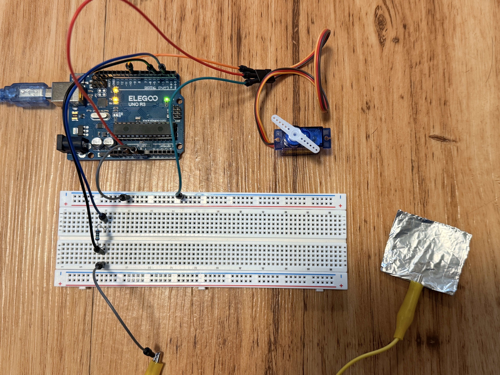
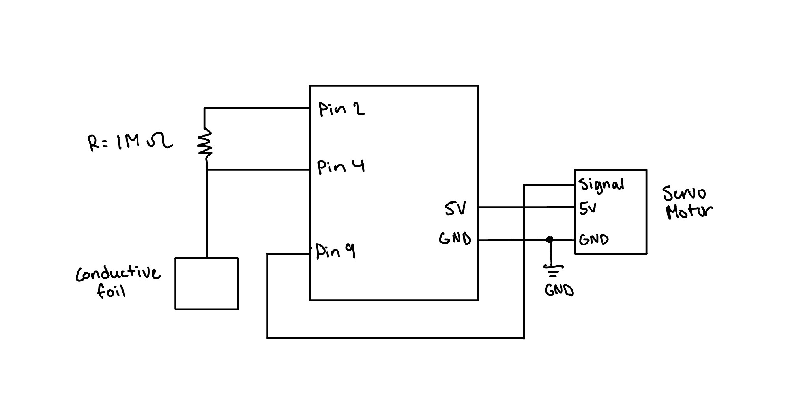
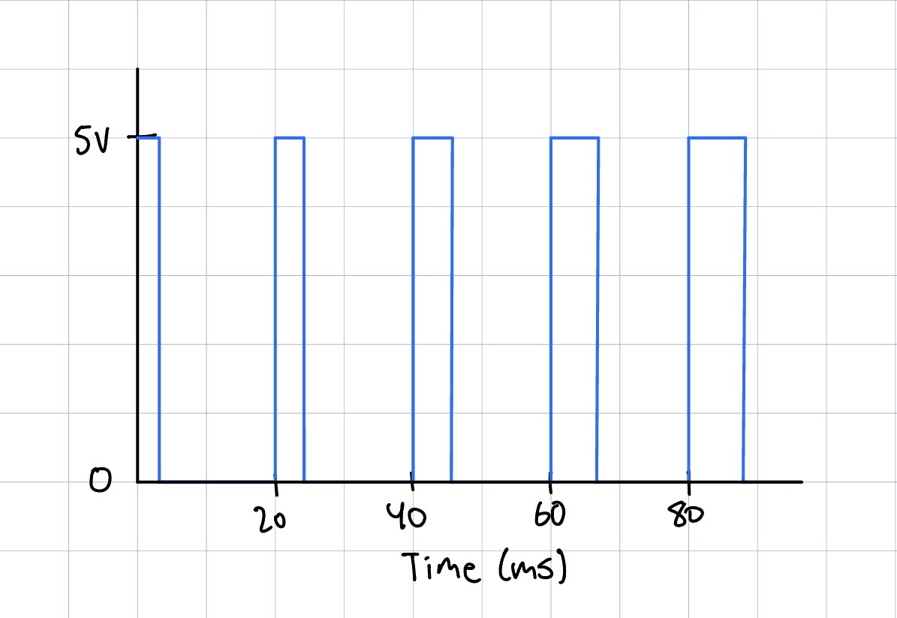

For this Assignment, I created a touch activated servo controller, with the tinfoil acting as a capacitive touch sensor. While the foil is touched, it continously moves back and forth between 0 - 180 degrees. And when let go, the servo motor stops and holds its current position till the next touch.

// Implement CapitiveSense library (input)
#include <CapacitiveSensor.h>
// Implement Servo library (output)
#include <Servo.h>
// Set up the sensor: send pin 2, receive pin 4
CapacitiveSensor cs_s2_r4 = CapacitiveSensor(2, 4);
// Create the servo object
Servo myservo;
// Variable to store servo position
int pos = 0;
// Direction of travel: 1 = toward 180, -1 = toward 0
int dir = 1;
// Sensor value above this counts as "touched"
const long THRESHOLD = 500;
void setup() {
// Begin Serial communication to print values
Serial.begin(9600);
// Attach servo to pin 9
myservo.attach(9);
}
void loop() {
// Read the capacitive sensor value
long total = cs_s2_r4.capacitiveSensor(30);
// Print sensor reading to serial monitor
Serial.println(total);
// Only make the servo move if the foil is being touched
if (total > THRESHOLD) {
// Take one 1-degree step in the current direction
pos = pos + dir;
// If either end is reached, reverse direction
if (pos >= 180 || pos <= 0) {
// Flip the direction
dir = -dir;
}
// Tell servo to go to its new position
myservo.write(pos);
// Wait 20 ms for the servo to reach the position
delay(20);
}
}
void loop() {
for (pos = 0; pos <= 180; pos += 1) {
myservo.write(pos);
delay(100);
}
}

// Use a median filter to help remove outliers
Setup analogRead to take in several readings and put them into an array
Sort the readings from smallest to largest
Take the middle element/reading of the sorted list (median)
filtered_val = sortedArray[N/2]
That is now your filtered value
// Need to do smoothing to filter out noise
Take in an N number of readings (i.e. 10)
Sum all the readings together
Divide the sum by N to get the average, then use it as the filtered value
Continously replace the oldest reading with the newest reading to continously update the average/filtered value